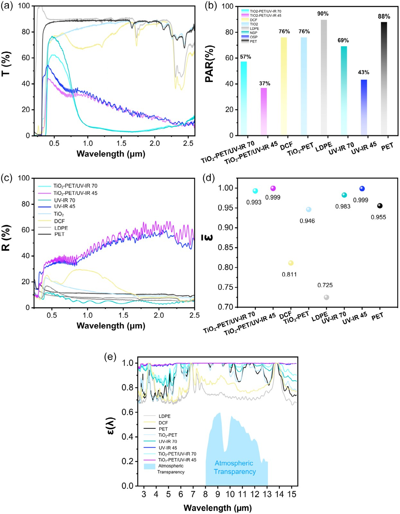
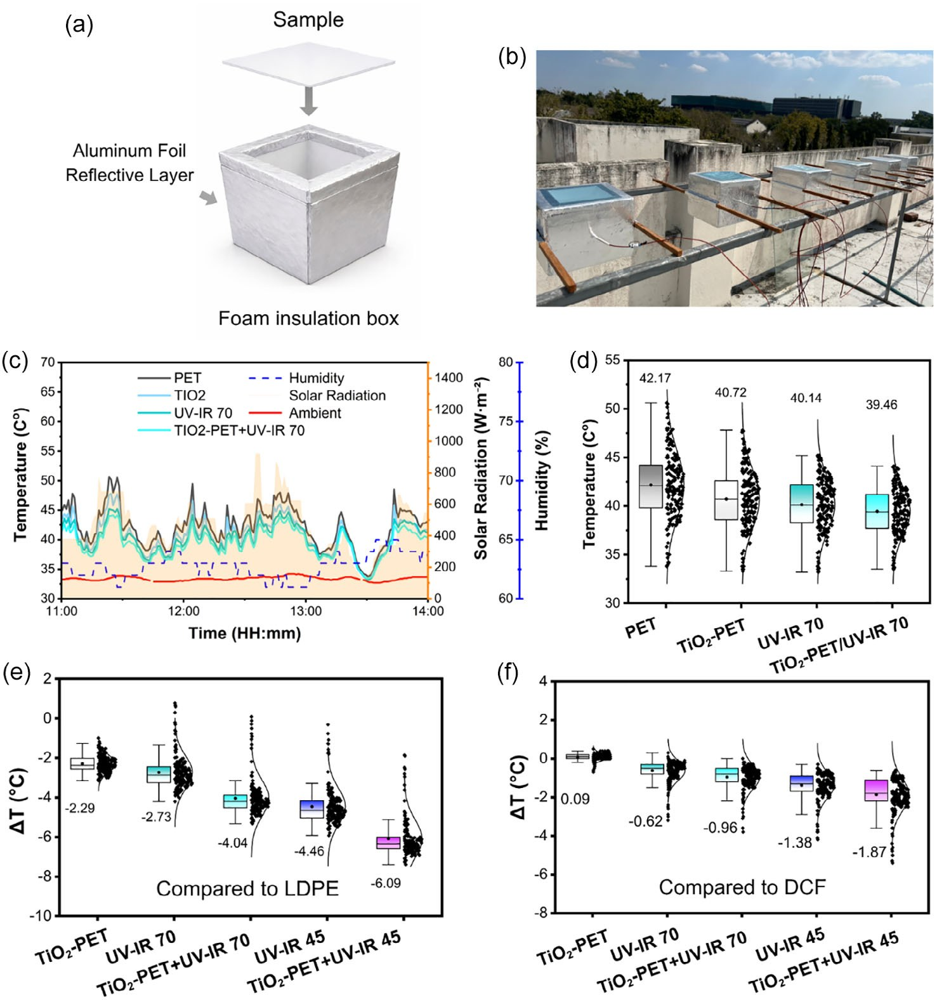
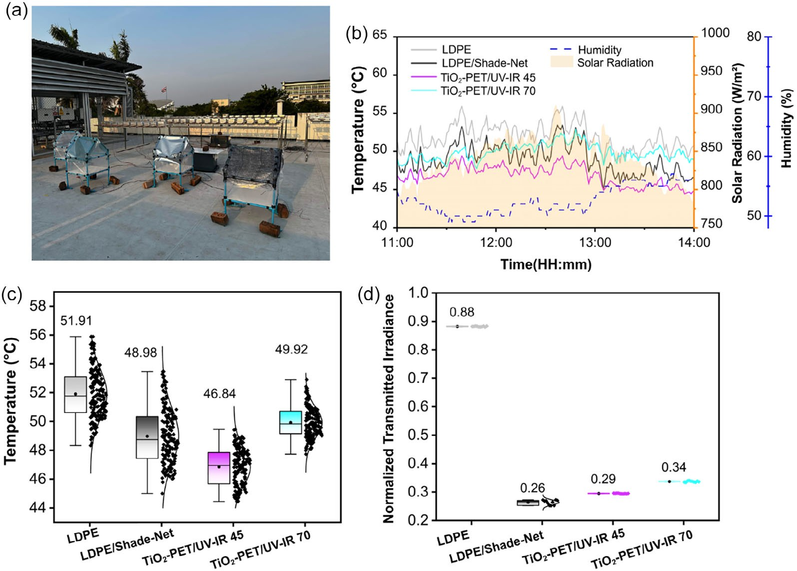

")
Abstract
Excess solar heat gain limits greenhouse productivity in tropical climates, where conventional polymer covers accumulate thermal energy and allow near-infrared (NIR) transmission. Here, we demonstrate a scalable multilayer greenhouse film that mitigates daytime heat stress through spectral management of solar radiation combined with radiative cooling. A TiO2-embedded polyethylene terephthalate (PET) scattering layer is laminated with ultraviolet (UV)–IR selective films to prevent excess heat while allowing appropriate photosynthetically active radiation (PAR) transmission. Two configurations are designed to address crop-dependent light requirements: a higher-transmittance film (~57% PAR) and a stronger heat-rejection film (~37% PAR). The multilayer structures suppress NIR transmission (up to 80–92% rejection), reduce UV exposure, and exhibit near-unity emissivity within the 8–13 μm atmospheric window (\(\bar{\varepsilon} \approx 0.99\)), enabling efficient radiative heat dissipation. Outdoor rooftop measurements under tropical sunlight demonstrate consistent daytime temperature reductions of 3–5°C compared with those of commercial greenhouse films; the PET-based laminate also provides high mechanical robustness (69–92 MPa tensile strength). These results establish spectral engineering as a practical strategy to manage the transparency–cooling trade-off for passive greenhouse cooling in hot climates.
Introduction
Heat stress in greenhouses
Excessive solar heat gain in greenhouses operating in hot climates elevates plant respiration, suppresses photosynthesis, and increases water loss, driving heavy reliance on energy- and water-intensive ventilation, cooling, and irrigation strategies. Among these strategies, shade nets are widely used to prevent greenhouse heat stress by reducing photosynthetically active radiation (PAR, 400–700 nm). However, their largely uniform attenuation reduces light intensity without spectral or angular control, often leading to suboptimal illumination at the plant canopy and lower photosynthetic efficiency.
Radiative cooling enables passive heat dissipation to outer space through the mid-infrared (MIR; 8–13 μm) atmospheric transparency window. Passive daytime radiative cooling (PDRC) extends this concept by combining high solar reflectance with strong MIR emissivity, allowing subambient cooling even under direct sunlight. In greenhouse applications, an ideal PDRC film would transmit PAR for plant growth while rejecting near-infrared (NIR) solar heat and efficiently radiating internal thermal energy.
Under high solar irradiance, reduction of PAR is unavoidable; this work demonstrates how that reduction can be engineered to suppress solar thermal load while preserving biologically effective illumination. Instead of uniformly attenuating sunlight through shading, the proposed approach redistributes incoming solar energy spectrally and angularly within a single, mechanically robust film.
Design
One laminate, three functions
The proposed TiO2–PET/UV–IR laminate integrates three key functions:
- diffuse transmission of PAR,
- selective suppression of heat-driving spectral bands (UV–NIR), and
- near-unity emissivity in the MIR atmospheric window for radiative heat dissipation.
To address crop-dependent tolerance to PAR reduction, two film variants are intentionally designed: a higher-transmittance configuration targeting light-demanding crops and a lower-transmittance configuration prioritizing thermal relief for heat-sensitive crops. UV–IR 70 provides higher visible transmittance suitable for light-demanding crops, whereas UV–IR 45 offers stronger NIR suppression and moderated PAR transmission appropriate for heat-sensitive and shade-tolerant crops.
Commercial-grade PET pellets were used as the polymer matrix. Titanium dioxide (TiO2, rutile phase) was incorporated as the filler. The dried pellets were processed using a single-screw extruder to produce composite sheets with an average thickness of 70 μm. To impart spectral selectivity, a commercial UV–IR-cut window film (automotive grade) was laminated onto the TiO2–PET surface without thermal bonding.
Spectral engineering
From the solar band to the mid-infrared
Rather than maximizing optical transparency, PAR reduction is treated here as an intentional control variable for thermal regulation under high solar irradiance. Pristine PET exhibits high broadband transparency, transmitting 87.9% of PAR; however, this high transparency is accompanied by substantial NIR transmission, which directly contributes to solar thermal loading. Introducing a low TiO2 loading into PET reduces PAR transmittance to 76.1%, primarily due to wavelength-dependent Mie scattering arising from the refractive-index contrast between rutile TiO2 particles and the PET matrix.
These results show that absorption- and reflection-dominant thermal management strategies can be selectively combined through multilayer spectral engineering. The TiO2–PET/UV–IR 70 and TiO2–PET/UV–IR 45 stacks reach blackbody-weighted emissivity of \(\bar{\varepsilon} \approx 0.99\) for both samples. By comparison, commercial LDPE and DCFs exhibit considerably lower MIR emissivities (\(\bar{\varepsilon} \approx 0.73\) and \(\bar{\varepsilon} \approx 0.81\), respectively), highlighting their limited capacity for radiative cooling despite widespread use in greenhouse applications.

The blackbody-weighted average emissivity over the atmospheric transparency window (8–13 μm) is defined as:
where \(I_{BB}(\lambda, T)\) is the spectral radiance of a blackbody at temperature \(T\) (taken as 300 K in this study).
Outdoor cooling
Rooftop measurements
Outdoor rooftop measurements were conducted at the Faculty of Science, Mahidol University, Nakhon Pathom, Thailand, under clear-sky conditions on 19th July, 24th July, and 2nd August 2025 between 11:00 and 14:00 local time, to evaluate the thermal performance of the proposed films under realistic tropical solar conditions. The strongest cooling performance is achieved by the TiO2–PET/UV–IR multilayer films, demonstrating the synergistic effect of combining controlled scattering with selective solar-band rejection.
Relative to LDPE and DCFs, progressively stronger cooling is observed from TiO2–PET to the TiO2–PET/UV–IR multilayer films, with the TiO2–PET/UV–IR 45 configuration achieving the largest temperature reductions (up to 5–6°C, depending on the reference baseline) while maintaining a moderate PAR transmittance of 37%.

TiO2–PET/UV–IR 45 maintains a PAR transmittance of 37% while suppressing NIR transmission to 19.8% (80.2% rejection) and reducing UV transmission to 7.1%. Similarly, TiO2–PET/UV–IR 70 retains 57.3% PAR while blocking 91.8% of NIR and transmitting only 2.7% UV. Conventional shade nets reduce all wavelengths equally. In contrast, the spectrally engineered films keep PAR while removing heat-carrying radiation and enhancing mid-IR emission, allowing more radiative cooling.
Validation
Small-scale greenhouses
To assess practical performance, outdoor experiments were conducted using identical polyvinyl chloride (PVC)-framed greenhouse units with the covering material as the only variable. Plant canopy-level temperature (i.e., at the height of the plant leaves) was selected as the primary metric, as it directly reflects the thermal environment experienced by plants. Relative to LDPE, TiO2–PET/UV–IR 45 reduces the canopy temperature by ~5.1°C.

Despite similar transmitted irradiance levels, TiO2–PET/UV–IR 45 maintains a substantially lower canopy temperature. UV/NIR blocking enables more effective thermal regulation per unit of transmitted irradiance compared to conventional shading, highlighting the advantage of selective spectral management over broadband attenuation strategies.
Mechanical testing shows that the TiO2–PET-based films exhibit tensile strengths of 69–92 MPa, significantly exceeding those of conventional LDPE (17 MPa) and DCFs (16 MPa), showing the potential to serve as a durable primary greenhouse covering under harsh outdoor conditions.
Conclusion
This work demonstrates that effective greenhouse cooling in tropical climates can be achieved by managing, rather than avoiding, the transparency–cooling trade-off. Rather than uniformly blocking light, cooling is realized by combining diffuse PAR transmission, NIR heat/UV rejection, and high MIR emissivity to enable continuous radiative heat dissipation. In the future, spectral-selective greenhouse covers may enable climate-adaptive cultivation in hot regions, reducing cooling energy demand while maintaining crop productivity, and offering a passive pathway toward resilient and low-carbon food production.
My contributions
From the paper's author contributions statement:
Thantham Jittham: investigation.
BibTeX
@article{gridtayawong2026transparency,
title = {Enhancing the Transparency--Temperature Trade-Off Through Spectral Engineering and Radiative Cooling},
author = {Gridtayawong, Pharit and Kaewmanee, Taweesak and Benchaphanthawee, Wachara and Phiriyasas, Varakorn and Ponghiransmith, Chattrarat and Rueangsawang, Worawut and Seriwattanachai, Chaowaphat and Sakata, Patawee and Tangwiroon, Napong and Jittham, Thantham and Phuphathanaphong, Napan and Wonganannont, Phatratorn and Pinpapat, Tansuda and Waritanant, Tanant and Tulyananda, Tatpong and Kanjanaboos, Pongsakorn},
journal = {Small Science},
volume = {6},
pages = {e70311},
year = {2026},
doi = {10.1002/smsc.70311}
}